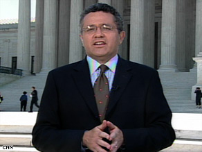

October
Jeffrey Toobin
Behind the marble columns and black robes of the United States Supreme Court lies a world of fierce ambition, clashing ideologies, and very human personalities. No one brings that world to life more vividly than Jeffrey Toobin — the nation's most prominent legal journalist and the author of the definitive insider account of the Court. In his lectures, Toobin unpacks landmark rulings and presidential nominations, offering audiences a sharp, nonpartisan analysis of how nine justices shape American life for generations.
Jeffrey Toobin is the Chief Legal Analyst for CNN and a staff writer for The New Yorker, where he has worked since 1993. A graduate of Harvard College (magna cum laude, in American History and Literature) and Harvard Law School (magna cum laude), he served as an editor of the Harvard Law Review. Before turning to journalism he clerked for Judge J. Edward Lumbard Jr. at the U.S. Court of Appeals for the Second Circuit, served as an Associate Counsel in the Office of Independent Counsel during the Iran-Contra investigation, and worked as an Assistant United States Attorney in Brooklyn.
Toobin is the bestselling author of seven books. The Nine: Inside the Secret World of the Supreme Court spent more than four months on the New York Times bestseller list and was named one of the best books of the year by Time, Newsweek, and The Economist. His other celebrated works include The Oath: The Obama White House and the Supreme Court, Too Close to Call: The 36-Day Battle to Decide the 2000 Election, and A Vast Conspiracy: The Real Story of the Sex Scandal That Nearly Brought Down a President.
His books have received awards from the Columbia University Graduate School of Journalism and Harvard's Nieman Foundation for Journalism. Toobin has covered virtually every major legal controversy of the past three decades, bringing unmatched depth and clarity to the intersection of law, politics, and American society.